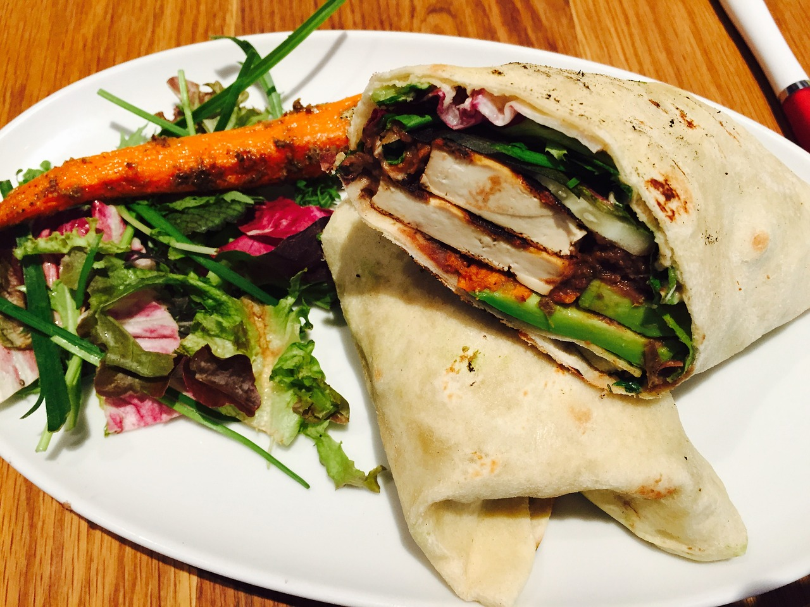

Sheet-Pan Roasted Salmon & Vegetables
Home

Description
Add the remaining 2 tablespoons oil and tofu to the pan. Cook, turning once, until browned, 3 to 4 minutes. Stir in the vegetables and oyster sauce.
Cook, stirring, until hot, about 1 minute.
Ingredients (4 wraps)
For the Bean Spread
- 1/2 cup finely chopped onion
- 1/4 cup sliced green onion
- 1 teaspoon ground coriander
- 1 teaspoon ground cumin
- 1 tablespoon canola oil
1/4 cup chopped fresh cilantro
- (15 ounce) can black beans, rinsed and drained
- 1/2 cup water
- 1 tablesp0on line juice
- 1 teaspoon finely chopped canned chipolte chile pepper in adobo sauce
- 1/4 teaspoon salt
For Four Wraps
- 4 8-inches whole wheat tortillas (omit if strictly watching carbs)
- 12 ounces chopped cooked chicken (about a cup)
- 4 cups shredded romaine lettuce or 4 cups whole fresh baby spinach leaves
- 1 cup chopped fresh cilantro
- 4 tablespoons bottled salsa
Steps
For the Spread
- In a covered small saucepan cook onions, coriander, and cumin in hot oil about 20 minutes or until very tender, stirring occasionally.
Remove from heat. Stir in cilantro.
- Transfer onion mixture to a blender or food processor. Add black beans, water, lime juice, chioplte pepper and salt.
Cover and blend until nearly smooth. Chill before serving. Keeps up to three days.
For the Wraps
- Place about a tablespoon spread on one side of tortilla. Top with chicken, spinach, cilantro, and salsa. Roll up.
- Or, if watching carbs religiously, just omit tortilla and make a pile of beans, spinach, cilantro, and salsa.